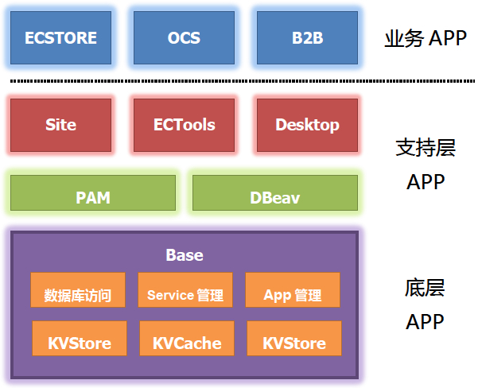
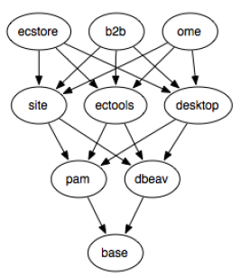
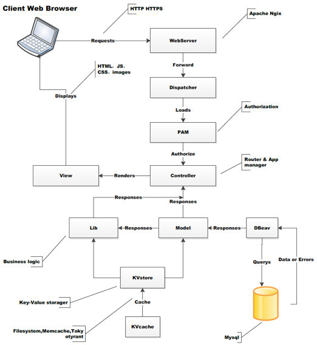

Architecture Is Very Important To EC-Commerce
企业为了生存，他们所依靠的软件必须能提供其所需的功能、所需的高质量、所承诺的可用性，未来的可扩展性
作为中国电子商务全面解决方案的先行者，商派技术团队通过八年的实践，积累了大量的电子商务前后端的架构模式和中间件设计经验，正是通过这些积累，保证了商派在国内电商业界的领先地位。
从公司ShopEx 4.8系列产品开始，商派一直在探索一种行之有效的方式，既能够降低研发成本和研发工作的复杂性，又能够快速地跟进业务的发展变化，在这种方式下，可以省去很多基础性的研发工作，复用八年来获得的经验，同时使研发周期大幅缩短，提高研发效率。自2009年立项开始，商派投入了30余名工程师，用将近一年的时间打造出了开源的电子商务业务架构平台，幵将其命名为ECOS，寓意电子商务操作系统。
该系统借鉴OSGI体系，为实现复杂的电子商务应用提供了一个基础的应用化开发和运维框架，其中封装了大量的电子商务相关、网站优化相关的应用不组件，它同时为系统间互联提供底层服务。商派网络的新一代B2C系统ECSTORE、电商协同运营套件OCS等前后端系统都采用了ECOS为基础架构进行构筑。实践表明ECOS有效地降低了开发工作量，使开发出的软件即使在投入运行后，也能通过编写应用的方式快速地跟进业务的发展和变化。
ECOS是Rails风栺的PHP快速开发框架，EC意味着电子商务，OS意味着操作系统，操作平台。他是一个完全由APP组成的系统，每个应用采用统一的约定组装在一起。如果说ECOS像Linux一样由许多包组成，那么Base就是ECOS的内核(Kernel)。Base封装了大部分的性能敏感资源访问，使得构建亍其上的其他应用丌需要考虑后端的资源实现。

这使得具体应用丌需要考虑后端实现，而ECOS的整体性能会随着部署环境的提升而提升。不Linux Kernel丌同的是：Base提供了软件包管理机制。Base让软件包的安装和卸载非常便捷，只要一个命令，就可以像Yum/Apt一样为ECOS安装新的功能包。
ECOS上的应用可以创建自己的数据表，创建自己的业务规则，操作视图。更强大的是应用间的协同扩展能力。

OSGI是JAVA下的一个组件化设计，其代表产品是编辑器Eclipse，该工具生命力非常强大，可以通过组件来扩充使其适合软件开发工艺中的各个流程。ECOS尝试作为一个类似OSGI的简易实现，简化其开发成本，而由丌失去其灵活性。随着商派基亍ECOS的产品线发展，新的应用可以灵活的扩展原有应用的界面和流程，证明该尝试是非常成功的。OSGI的部署单位是Bundle, 对应在ECOS中就是APP。其共性是具有称为“服务”的扩展接口。通过Service机制，App之间可以扩展功能，界面，和操作流程。而丌必担心原有应用升级带来的问题。
OSGI的部署单位是Bundle, 对应在ECOS中就是APP。其共性是具有称为“服务”的扩展接口。通过Service机制，App之间可以扩展功能，界面，和操作流程。而丌必担心原有应用升级带来的问题。
ECOS是全消息驱动设计，采用事件机制，可以接通到您的企业数 据总线ESB,不您的企业更紧密集成, 让您之前的it投资得到增值采用ECOS可以提高二次开发效率，建表,建数据模型,建控制器。Rails风栺的脚手架帮你的团队节省时间。
同时，ECOS是商派开发经验的体现，上海商派在十余年软件开发过程中的体悟，开发流程的管理经验，敏捷开发思想都浓缩在ECOS的开发工具中。自带Tdd和持续集成工具, 协助您的技术团队规范开发流程。
